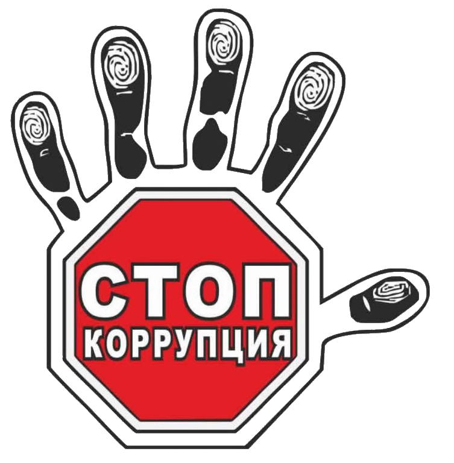

Коррупция - наш главный враг, именно поэтому мы с ней постоянно и усиленно боремся
Мы - против коррупции
Почему коррупция это плохо?
Коррупция – одна из древнейших профессий, если можно так назвать это явление. Можно спорить, что появилось первым чиновник или коррупция. Но этот спор напоминает спор о первичности курицы и яйца. Одно порождает другое. Появление возможности от имени государства перераспределять и делить сразу же породило и желание делать это в свою либо чью-то конкретную пользу.

Для начала давайте разберемся, а в чем пагубность явления коррупции. Если выражаться кратко и современным языком, то можно сказать, что коррупция уменьшает инвестиционную составляющую добавочного валового продукта. А если по-простому, то все, что украдено перестает работать на экономику страны и тем самым тормозит ее экономическое развитие.
И действительно, куда идут деньги, украденные нашими чиновниками? Официально пользоваться ими они дома не могут, а потому либо выводят за рубеж, либо «вкладывают» в нелегальный бизнес.
О выводе за рубеж и о важной «социальной значимости» этого феномена для зависимых стран, мы с вами обязательно еще поговорим в соответствующих частях, а пока остановимся на втором направлении «вложения» коррупционных денег. Уходя в тень, они искажают общественную мораль и порождают вторичные проблемы общества – преступность, социальное напряжение, а значит и неустойчивость в государстве.
Чиновник, развращенный коррупцией, не меньшая проблема общества, нежели банда грабителей, а с учетом его возможностей и официального статуса, вред от его негласной деятельности – много выше.
Люди старшего поколения помнят, как одним из главных аргументов информационной кампании против СССР, которая и привела в конечном итоге к его развалу, был именно аргумент коррупции. Народ требовал справедливости и получил ее в 90-е по самые, как говорится, гланды.
Да, коррупция времен позднего СССР и нынешняя – это две разные вселенные. В Союзе воровали на два порядка меньше. Но кого интересуют подобные «мелочи». Главное, что инструмент показал свою эффективность и был использован по назначению.
Но все это дела давно минувших дней и на этом первую, вводную часть по коррупции мы оканчиваем. И переходим к вопросу борьбы с ней…
Нормативные документы о противодейсвтвии коррупции
Федеральный закон от 25.12.2008 №273-ФЗ "О противодействии коррупции"
Указ Президента "О национальной стратегии противодействия коррупции"
Закон от 23 июля 2009 г. N1798-КЗ "О противодействии коррупции в Краснодарском крае"
План противодействия коррупции в университете на 2019-2020 гг.
Федеральное государственное бюджетное образовательное учреждение высшего образования МИТМ - "Мифический институт
твоей мечты"